Layout in AppCUI¶
Each control in AppCUI is created based on a layout rule that can be described as an ascii string that respects the following format:
"key:value,key:value,...key:value"
Where key can be one of the following:
Key
|
Alias
(short)
|
Value type
|
Description
|
|---|---|---|---|
x |
numerical or percentage |
“X” coordonate |
|
y |
numerical or percentage |
“Y” coordonate |
|
left
|
l
|
numerical or percentage
|
left anchor for the control
(the space between parent left margin and control)
|
right
|
r
|
numerical or percentage
|
right anchor for the control
(the space between parent right margin and control)
|
top
|
t
|
numerical or percentage
|
top anchor for the control
(the space between parent top margin and control)
|
bottom
|
b
|
numerical or percentage
|
bottom anchor for the control
(the space between parent bottom margin and control)
|
width |
w |
numerical or percentage |
the width of the control |
height |
h |
numerical or percentage |
the height of the control |
dock |
d |
docking value |
the way the entire control is docked on its parent |
align |
a |
alignament value |
the way the entire control is aligne against a fix point |
Remarks: Key aliases can be use to provide a shorter format for a layout. In other words, the following two formats are identical: x:10,y:10,width:30,height:30 and x:10,y:10,w:30,h:30
A numerical value is represented by an integer (positive and negative) number between -30000 and 30000. Example: x:100 –> X will be 100. Using a value outside accepted interval ([-30000..30000]) will reject the layout.
A percentage value is represented by a floating value (positive and negative) succeded by the character % between -300% and 300%. Example: x:12.75% –> X will be converted to a numerical value that is equal to the width of its parent multiplied by 0.1275. Using a value outside accepted interval ([-300%..300%]) will reject the layout. Percentage values can be use to ensure that if a parent size is changed, its children change their size with it.
Dock values can be one of the following
Value |
Alias |
Representation |
|---|---|---|
topleft |
lefttop, tl, lt |
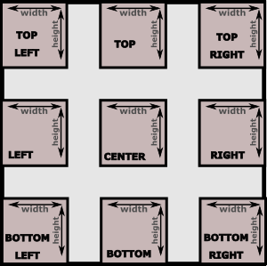 |
top |
t |
|
topright |
righttop, tr, rt |
|
right |
r |
|
bottomright |
rightbottom, br, rb |
|
bottom |
b |
|
bottomleft |
leftbottom, lb, bl |
|
left |
l |
|
center |
c |
Remarks: Dock value aliases can be use to provide a shorter format for a layout. In other words: dock:topleft is the same with dock:tl or dock:lt or d:tl
Align values have the same name as the docking ones, but they refer to the direction of width and height from a specific point (denoted by “X” and “Y” keys). Align parameter is used to compute top-left and bottom-right corner of a control that is described using a (X,Y) coordonate. The following table ilustrate how this values are computed:
Value |
Alias |
Top-Left corner |
Bottom-Right corner |
|---|---|---|---|
topleft |
lefttop, tl, lt |
(x,y) |
(x+width,y+height) |
top |
t |
(x-width/2,y) |
(x+width/2,y+height) |
topright |
righttop, tr, rt |
(x-width,y) |
(x,y+height) |
right |
r |
(x-width,y-height/2) |
(x,y+height/2) |
bottomright |
rightbottom, br, rb |
(x-width,y-height) |
(x,y) |
bottom |
b |
(x-width/2,y-height) |
(x+width/2,y) |
bottomleft |
leftbottom, lb, bl |
(x,y-height) |
(x+width,y) |
left |
l |
(x,y-height/2) |
(x+width,y+height/2) |
center |
c |
(x-width/2,y-height/2) |
(x+width/2,y+height/2) |
Remarks: Align value aliases can be use to provide a shorter format for a layout. In other words: align:center is the same with align:c or a:c
Docking¶
To dock a control inside its parent use d or dock key.
When docking a control, the following key can not be used: align, x, y, left, right, top, bottom.
Width and height should be used to specify the size of control. If not specified, they are defaulted to 100%.
Layout |
Outcome |
|---|---|
d:c,w:10,h:5 |
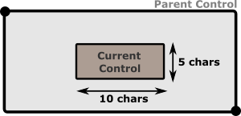 |
d:c,w:50%,h:75% |
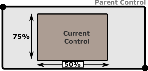 |
d:br,w:50%
|
As |
d:c or d:tl or d:br …
|
As both
width and height parameters are missing, theywill be defaulted to 100%. This means that curren control
will ocupy its entire parent surface. This is the easyest way
to make a control fill all of its parent surface.
|
Using absolute offset¶
In this mode parameters x and y must be used to specify a point from where the control will be constructed.
When using this more, parameters d, left, right, top, bottom can not be used.
If width or height are not specified , they will be defaulted to 1 character (unless there is a minimum width or minumum height specified for that controls - in which case that limit will be applied).
If align is not specified, it will be defaulted to topleft
If x, y, width or height are provided using percentages, the control will automatically adjust its size if its parent size changes.
Layout |
Result |
|---|---|
x:5,y:5,w:10,h:10 or x:5,y:5,w:10,h:4,a:tl |
If no alignament is provided, top-left will be considered as a default.
|
x:30,y:20,w:10,h:4,a:br |
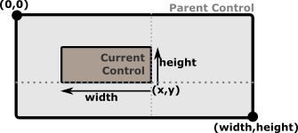 |
x:50%,y:50%,w:10,h:3,a:c |
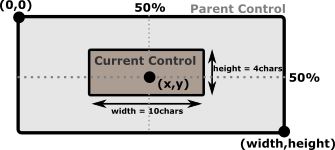 |
x:50%,y:50%,w:100%,h:3,a:c |
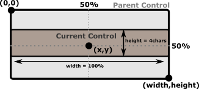 |
Anchors¶
Anchors (left, right, top and bottom) represent the distance between the object and its parent margins. When one of the anchors is present, the dock key can not be used. Depending on the combination of anchors used, other keys may be unusable.
Corner anchors¶
Corner anchors are cases when the following combinations of anchors are used toghether (left and top), (left and bottom), (right and top) and (right and bottom).
When this combinations are used, x and y keys can not be used. Using them will reject the layout.
If width or height are not specified , they will be defaulted to 1 character (unless there is a minimum width or minumum height specified for that controls - in which case that limit will be applied).
The combination of anchors also decides how (top,left) and (right,bottom) corners of a control are computed, as follows:
Combonation |
Top-Left corner |
Bottom-Right corner |
|---|---|---|
top and left |
(left, top) |
(left+width, top+height) |
top and right |
(parentWidth-right-width, top) |
(parentWidth-right, top+height) |
bottom and left |
(left, parentHeight-bottom-height) |
(left+width, parentHeight-bottom) |
bottom and right |
(parentWidth-right-width, parentHeight-bottom-height) |
(parentWidth-right, parentHeight-bottom) |
where parentWidth is the width of control parent, and parentHeight the height of control parent.
Examples
Layout |
Result |
|---|---|
t:10,r:20,w:50,h:20 |
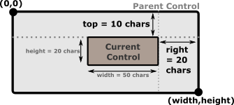 |
b:10,r:20,w:25%,h:10 |
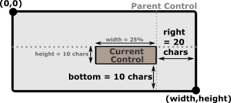 |
b:10%,l:50%,w:25%,h:10 |
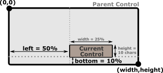 |
Using Left-Right anchors¶
When Left and right anchors are used together, there are several restrictions. First of all, width and x parameters can not be specified. Width is deduced as the difference between parents width and the sum of left and right anchors. Left anchor will also be considered the “x” value.
However, height parameter should be specified (if not specified it will be defaulted to 1 character (unless a minimum height is specified for that controls - in which case that limit will be applied).
align paramter can also be specified , but only with the following values: top, center or bottom. If not specified it will be defaulted to center.
Examples
Layout |
Result |
|---|---|
l:10,r:20,h:20,y:80%,a:b |
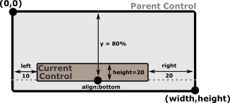 |
l:10,r:20,h:100%,y:50%,a:c |
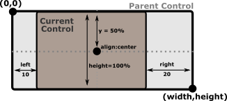 |
l:10,r:20,h:50%,y:0,a:t |
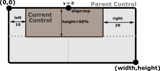 |
Using Top-Bottom anchors¶
When top and bottom anchors are used together, there are several restrictions. First of all, height and y parameters can not be specified. Height is deduced as the difference between parents height and the sum of top and bottom anchors. Top anchor will also be considered the “y” value.
However, width parameter should be specified (if not specified it will be defaulted to 1 character (unless a minimum width is specified for that controls - in which case that limit will be applied).
align paramter can also be specified , but only with the following values: left, center or right. If not specified it will be defaulted to center.
Examples
Layout |
Result |
|---|---|
t:10,b:20,w:90,x:80%,a:r |
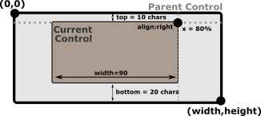 |
t:10,b:20,w:100%,x:50%,a:c |
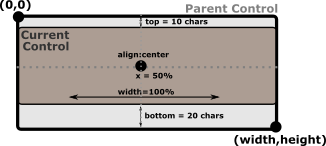 |
t:10,b:20,w:50%,x:0,a:l |
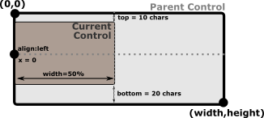 |
3-margin anchors¶
When using 3 of the 4 anchors, the following keys can not be used: x, y, align and dock. Using them will reject the layout.
Depending on the achors that are being used, either width or height are forbidden.
The following table reflects these dependencies:
Combination |
Result |
|---|---|
left and top and right left and bottom and right |
|
top and left and bottom top and right and bottom |
|
The position of the control is also computed based on the combination of the 3 anchors selectd, as shown in the next table:
Combonation |
Top-Left corner |
Bottom-Right corner |
|---|---|---|
left and top and right |
(left, top) |
(parentWidth-right, top+height) |
left and bottom and right |
(left, parentHeight-bottom-height) |
(parentWidth-right, parentHeight-bottom) |
top and left and bottom |
(left, top) |
(left+width, parentHeight-bottom) |
top and right and bottom |
(parentWidth-right-width, top) |
(parentWidth-right, parentHeight-bottom) |
where parentWidth is the width of control parent, and parentHeight the height of control parent.
Examples
Layout |
Result |
|---|---|
l:10,t:5,r:30,h:50% |
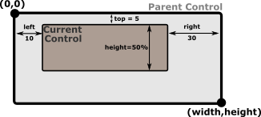 |
l:10,b:10,r:30,h:30 |
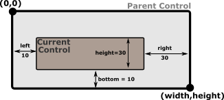 |
l:10,t:10,b:100,w:50% |
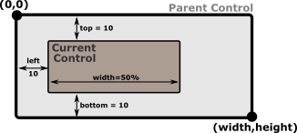 |
r:10%,t:10,b:100,w:75% |
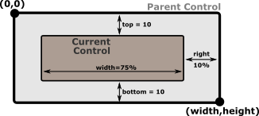 |
4-margin anchors¶
When all of the 4 anchors, the rest of the keys ( x, y, width, height, align and dock) can not be used. Using them will reject the layout.
Example
Layout |
Result |
|---|---|
l:10,t:5,r:30,b:5 |
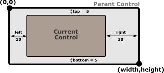 |